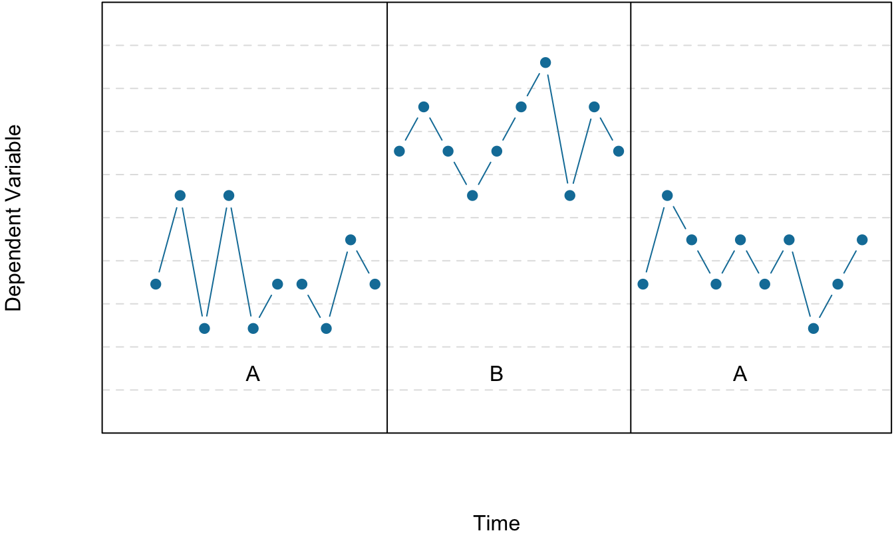

Chapter 7 Quasi-Experimental Research
LEARNING OBJECTIVES
- Explain what quasi-experimental research is and distinguish it clearly from both experimental and correlational research.
- Describe three different types of quasi-experimental research designs (nonequivalent groups, pretest-posttest, and interrupted time series) and identify examples of each one.
The prefix quasi means “resembling.” Thus quasi-experimental research is research that resembles experimental research but is not true experimental research. Although the independent variable is manipulated, participants are not randomly assigned to conditions or orders of conditions (Cook et al., 1979). Because the independent variable is manipulated before the dependent variable is measured, quasi-experimental research eliminates the directionality problem. But because participants are not randomly assigned – making it likely that there are other differences between conditions – quasi-experimental research does not eliminate the problem of confounding variables. In terms of internal validity, therefore, quasi-experiments are generally somewhere between correlational studies and true experiments.
Quasi-experiments are most likely to be conducted in field settings in which random assignment is difficult or impossible. They are often conducted to evaluate the effectiveness of a treatment – perhaps a type of psychotherapy or an educational intervention. There are many different kinds of quasi-experiments, but we will discuss just a few of the most common ones here, focusing first on nonequivalent groups, pretest-posttest, interrupted time series, and combination designs before turning to single subject designs (including reversal and multiple-baseline designs).
7.1 Nonequivalent Groups Design
Recall that when participants in a between-subjects experiment are randomly assigned to conditions, the resulting groups are likely to be quite similar. In fact, researchers consider them to be equivalent. When participants are not randomly assigned to conditions, however, the resulting groups are likely to be dissimilar in some ways. For this reason, researchers consider them to be nonequivalent. A nonequivalent groups design, then, is a between-subjects design in which participants have not been randomly assigned to conditions.
Imagine, for example, a researcher who wants to evaluate a new method of teaching fractions to third graders. One way would be to conduct a study with a treatment group consisting of one class of third-grade students and a control group consisting of another class of third-grade students. This would be a nonequivalent groups design because the students are not randomly assigned to classes by the researcher, which means there could be important differences between them. For example, the parents of higher achieving or more motivated students might have been more likely to request that their children be assigned to Ms. Williams’s class. Or the principal might have assigned the “troublemakers” to Mr. Jones’s class because he is a stronger disciplinarian. Of course, the teachers’ styles, and even the classroom environments, might be very different and might cause different levels of achievement or motivation among the students. If at the end of the study there was a difference in the two classes’ knowledge of fractions, it might have been caused by the difference between the teaching methods – but it might have been caused by any of these confounding variables.
Of course, researchers using a nonequivalent groups design can take steps to ensure that their groups are as similar as possible. In the present example, the researcher could try to select two classes at the same school, where the students in the two classes have similar scores on a standardized math test and the teachers are the same sex, are close in age, and have similar teaching styles. Taking such steps would increase the internal validity of the study because it would eliminate some of the most important confounding variables. But without true random assignment of the students to conditions, there remains the possibility of other important confounding variables that the researcher was not able to control.
7.2 Pretest-Posttest Design
In a pretest-posttest design, the dependent variable is measured once before the treatment is implemented and once after it is implemented. Imagine, for example, a researcher who is interested in the effectiveness of an STEM education program on elementary school students’ attitudes toward science, technology, engineering and math. The researcher could measure the attitudes of students at a particular elementary school during one week, implement the STEM program during the next week, and finally, measure their attitudes again the following week. The pretest-posttest design is much like a within-subjects experiment in which each participant is tested first under the control condition and then under the treatment condition. It is unlike a within-subjects experiment, however, in that the order of conditions is not counterbalanced because it typically is not possible for a participant to be tested in the treatment condition first and then in an “untreated” control condition.
If the average posttest score is better than the average pretest score, then it makes sense to conclude that the treatment might be responsible for the improvement. Unfortunately, one often cannot conclude this with a high degree of certainty because there may be other explanations for why the posttest scores are better. One category of alternative explanations goes under the name of history. Other things might have happened between the pretest and the posttest. Perhaps an science program aired on television and many of the students watched it, or perhaps a major scientific discover occured and many of the students heard about it. Another category of alternative explanations goes under the name of maturation. Participants might have changed between the pretest and the posttest in ways that they were going to anyway because they are growing and learning. If it were a yearlong program, participants might become more exposed to STEM subjects in class or better reasoners and this might be responsible for the change.
Another alternative explanation for a change in the dependent variable in a pretest-posttest design is regression to the mean. This refers to the statistical fact that an individual who scores extremely on a variable on one occasion will tend to score less extremely on the next occasion. For example, a bowler with a long-term average of 150 who suddenly bowls a 220 will almost certainly score lower in the next game. Her score will “regress” toward her mean score of 150. Regression to the mean can be a problem when participants are selected for further study because of their extreme scores. Imagine, for example, that only students who scored especially low on a test of fractions are given a special training program and then retested. Regression to the mean all but guarantees that their scores will be higher even if the training program has no effect. A closely related concept – and an extremely important one in psychological research – is spontaneous remission. This is the tendency for many medical and psychological problems to improve over time without any form of treatment. The common cold is a good example. If one were to measure symptom severity in 100 common cold sufferers today, give them a bowl of chicken soup every day, and then measure their symptom severity again in a week, they would probably be much improved. This does not mean that the chicken soup was responsible for the improvement, however, because they would have been much improved without any treatment at all. The same is true of many psychological problems. A group of severely depressed people today is likely to be less depressed on average in 6 months. In reviewing the results of several studies of treatments for depression, researchers Michael Posternak and Ivan Miller found that participants in waitlist control conditions improved an average of 10 to 15% before they received any treatment at all (Posternak & Miller, 2001). Thus one must generally be very cautious about inferring causality from pretest-posttest designs.
Finally, it is possible that the act of taking a pretest can sensitize participants to the measurement process or heighten their awareness of the variable under investigation. This heightened sensitivity, called a testing effect, can subsequently lead to changes in their posttest responses, even in the absence of any external intervention effect.
7.3 Interrupted Time Series Design
A variant of the pretest-posttest design is the interrupted time-series design. A time series is a set of measurements taken at intervals over a period of time. For example, a manufacturing company might measure its workers’ productivity each week for a year. In an interrupted time series-design, a time series like this is “interrupted” by a treatment. In a recent COVID-19 study, the intervention involved the implementation of state-issued mask mandates and restrictions on on-premises restaurant dining. The researchers examined the impact of these measures on COVID-19 cases and deaths (Guy, 2021). Since there was a rapid reduction in daily case and death growth rates following the implementation of mask mandates, and this effect persisted for an extended period, the researchers concluded that the implementation of mask mandates was the cause of the decrease in COVID-19 transmission. This study employed an interrupted time series design, similar to a pretest-posttest design, as it involved measuring the outcomes before and after the intervention. However, unlike the pretest-posttest design, it incorporated multiple measurements before and after the intervention, providing a more comprehensive analysis of the policy impacts.
Figure 7.1 shows data from a hypothetical interrupted time-series study. The dependent variable is the number of student absences per week in a research methods course. The treatment is that the instructor begins publicly taking attendance each day so that students know that the instructor is aware of who is present and who is absent. The top panel of Figure 7.1 shows how the data might look if this treatment worked. There is a consistently high number of absences before the treatment, and there is an immediate and sustained drop in absences after the treatment. The bottom panel of Figure 7.1 shows how the data might look if this treatment did not work. On average, the number of absences after the treatment is about the same as the number before. This figure also illustrates an advantage of the interrupted time-series design over a simpler pretest-posttest design. If there had been only one measurement of absences before the treatment at Week 7 and one afterward at Week 8, then it would have looked as though the treatment were responsible for the reduction. The multiple measurements both before and after the treatment suggest that the reduction between Weeks 7 and 8 is nothing more than normal week-to-week variation.
![Two line graphs. The x-axes on both are labeled Week and range from 0 to 14. The y-axes on both are labeled Absences and range from 0 to 8. Between weeks 7 and 8 a vertical dotted line indicates when a treatment was introduced. Both graphs show generally high levels of absences from weeks 1 through 7 (before the treatment) and only 2 absences in week 8 (the first observation after the treatment). The top graph shows the absence level staying low from weeks 9 to 14. The bottom graph shows the absence level for weeks 9 to 15 bouncing around at the same high levels as before the treatment.](07-quasi-experiments_files/figure-html/timeseries-1.png)
![Two line graphs. The x-axes on both are labeled Week and range from 0 to 14. The y-axes on both are labeled Absences and range from 0 to 8. Between weeks 7 and 8 a vertical dotted line indicates when a treatment was introduced. Both graphs show generally high levels of absences from weeks 1 through 7 (before the treatment) and only 2 absences in week 8 (the first observation after the treatment). The top graph shows the absence level staying low from weeks 9 to 14. The bottom graph shows the absence level for weeks 9 to 15 bouncing around at the same high levels as before the treatment.](07-quasi-experiments_files/figure-html/timeseries-2.png)
Figure 7.1: Hypothetical interrupted time-series design. The top panel shows data that suggest that the treatment caused a reduction in absences. The bottom panel shows data that suggest that it did not.
7.4 Combination Designs
A type of quasi-experimental design that is generally better than either the nonequivalent groups design or the pretest-posttest design is one that combines elements of both. There is a treatment group that is given a pretest, receives a treatment, and then is given a posttest. But at the same time there is a control group that is given a pretest, does not receive the treatment, and then is given a posttest. The question, then, is not simply whether participants who receive the treatment improve but whether they improve more than participants who do not receive the treatment.
Imagine, for example, that students in one school are given a pretest on their current level of engagement in pro-environmental behaviors (i.e., recycling, eating less red meat, abstaining for single-use plastics, etc.), then are exposed to an pro-environmental program in which they learn about the effects of human caused climate change on the planet, and finally are given a posttest. Students in a similar school are given the pretest, not exposed to an pro-environmental program, and finally are given a posttest. Again, if students in the treatment condition become more involved in pro-environmental behaviors, this could be an effect of the treatment, but it could also be a matter of history or maturation. If it really is an effect of the treatment, then students in the treatment condition should become engage in more pro-environmental behaviors than students in the control condition. But if it is a matter of history (e.g., news of a forest fire or drought) or maturation (e.g., improved reasoning or sense of responsibility), then students in the two conditions would be likely to show similar amounts of change. This type of design does not completely eliminate the possibility of confounding variables, however. Something could occur at one of the schools but not the other (e.g., a local heat wave with record high temperatures), so students at the first school would be affected by it while students at the other school would not.
Finally, if participants in this kind of design are randomly assigned to conditions, it becomes a true experiment rather than a quasi experiment. In fact, this kind of design has now been conducted many times – to demonstrate the effectiveness of psychotherapy.
KEY TAKEAWAYS
- Quasi-experimental research involves the manipulation of an independent variable without the random assignment of participants to conditions or orders of conditions. Among the important types are nonequivalent groups designs, pretest-posttest, and interrupted time-series designs.
- Quasi-experimental research eliminates the directionality problem because it involves the manipulation of the independent variable. It does not eliminate the problem of confounding variables, however, because it does not involve random assignment to conditions. For these reasons, quasi-experimental research is generally higher in internal validity than correlational studies but lower than true experiments.
EXERCISES
- Practice: Imagine that two college professors decide to test the effect of giving daily quizzes on student performance in a statistics course. They decide that Professor A will give quizzes but Professor B will not. They will then compare the performance of students in their two sections on a common final exam. List five other variables that might differ between the two sections that could affect the results.
- Discussion: Imagine that a group of obese children is recruited for a study in which their weight is measured, then they participate for 3 months in a program that encourages them to be more active, and finally their weight is measured again. Explain how each of the following might affect the results:
- regression to the mean
- spontaneous remission
- history
- maturation
7.5 Single-Subject Research
LEARNING OBJECTIVES
- Explain what single-subject research is, including how it differs from other types of psychological research and who uses single-subject research and why.
- Design simple single-subject studies using reversal and multiple-baseline designs.
- Explain how single-subject research designs address the issue of internal validity.
- Interpret the results of simple single-subject studies based on the visual inspection of graphed data.
- Explain some of the points of disagreement between advocates of single-subject research and advocates of group research.
Researcher Vance Hall and his colleagues were faced with the challenge of increasing the extent to which six disruptive elementary school students stayed focused on their schoolwork (Hall et al., 1968). For each of several days, the researchers carefully recorded whether or not each student was doing schoolwork every 10 seconds during a 30-minute period. Once they had established this baseline, they introduced a treatment. The treatment was that when the student was doing schoolwork, the teacher gave him or her positive attention in the form of a comment like “good work” or a pat on the shoulder. The result was that all of the students dramatically increased their time spent on schoolwork and decreased their disruptive behavior during this treatment phase. For example, a student named Robbie originally spent 25% of his time on schoolwork and the other 75% “snapping rubber bands, playing with toys from his pocket, and talking and laughing with peers” (p. 3). During the treatment phase, however, he spent 71% of his time on schoolwork and only 29% on other activities. Finally, when the researchers had the teacher stop giving positive attention, the students all decreased their studying and increased their disruptive behavior. This was consistent with the claim that it was, in fact, the positive attention that was responsible for the increase in studying. This was one of the first studies to show that attending to positive behavior – and ignoring negative behavior – could be a quick and effective way to deal with problem behavior in an applied setting.

Figure 7.2: Single-subject research has shown that positive attention from a teacher for studying can increase studying and decrease disruptive behavior. Photo by Jerry Wang on Unsplash.
Overview of Single-Subject Research
What Is Single-Subject Research?
Single-subject research is a type of quantitative, quasi-experimental research that involves studying in detail the behavior of each of a small number of participants. Note that the term single-subject does not mean that only one participant is studied; it is more typical for there to be somewhere between two and 10 participants. Single-subject research can be contrasted with group research, which typically involves studying large numbers of participants and examining their behavior primarily in terms of group means, standard deviations, and so on.
It is important to distinguish single-subject research from case studies. A case study is a detailed description of an individual, which can include both qualitative and quantitative analyses. Case studies can be useful for suggesting new research questions and for illustrating general principles, but they cannot substitute for carefully designed research studies because they have serious problems with both internal and external validity.
There are two important assumptions underlying single-subject research. First is the assumption that it is important to focus intensively on the behavior of individual participants. Group research can hide individual differences and generate results that do not represent the behavior of any individual. Second is the assumption that it is important to study strong and consistent effects that have biological or social importance, sometimes referred to as social validity (Wolf, 1978).
Single-subject research has been around as long as the field of psychology itself. In the middle of the 20th century, B. F. Skinner clarified many of the assumptions underlying single-subject research and refined many of its techniques (Skinner, 1938). This approach, which Skinner called the experimental analysis of behavior, remains an important subfield of psychology. By the 1960s, many researchers were interested in using this approach to conduct applied research primarily with humans – a subfield now called applied behavior analysis (Baer et al., 1968).
Single-Subject Research Designs
General Features of Single-Subject Designs
Before looking at any specific single-subject research designs, it will be helpful to consider some features that are common to most of them. Many of these features are illustrated in Figure 7.3, which shows the results of a generic single-subject study. First, the dependent variable is measured repeatedly over time at regular intervals. Second, the study is divided into distinct phases, and the participant is tested under one condition per phase. The conditions are often designated by capital letters: A, B, C, and so on. Another important aspect is that the change from one condition to the next does not usually occur after a fixed amount of time. Instead, it depends on the participant’s behavior using the steady state strategy (Sidman, 1960) – the researcher waits until the participant’s behavior becomes fairly consistent before changing conditions.

Figure 7.3: Results of a generic single-subject study illustrating several principles of single-subject research.
Reversal Designs
The most basic single-subject research design is the reversal design, also called the ABA design. During the first phase, A, a baseline is established for the dependent variable. When steady state responding is reached, phase B begins as the researcher introduces the treatment. Finally, the researcher removes the treatment and again waits until the dependent variable reaches a steady state. This basic reversal design can also be extended with the reintroduction of the treatment (ABAB), another return to baseline (ABABA), and so on. The study by Hall and his colleagues was an ABAB reversal design (Figure 7.4).
![Line graph illustrating an ABAB reversal design. Sessions are on the x-axis and percentage of time studying on the y-axis (0 to 100). Three vertical lines divide the graph into four phases. In the first baseline phase, studying time fluctuates at a low level around 25 to 35 percent. In the first positive attention phase, studying time rises steadily and levels off around 70 to 80 percent. In the second baseline phase, studying time drops back down to around 40 to 55 percent. In the second positive attention phase, studying time rises again to around 60 to 80 percent, replicating the effect of the treatment.](07-quasi-experiments_files/figure-html/abab-1.png)
Figure 7.4: An approximation of the results for Hall and colleagues’ participant Robbie in their ABAB reversal design. The percentage of time he spent studying (the dependent variable) was low during the first baseline phase, increased during the first treatment phase until it leveled off, decreased during the second baseline phase, and again increased during the second treatment phase.
The reversal – the removal of the treatment – is necessary because if the dependent variable changes after the treatment is introduced, it is not always clear that the treatment was responsible. But if the dependent variable changes with the introduction of the treatment and then changes back with the removal of the treatment, it is much clearer that the treatment is the cause.
Multiple-Baseline Designs
There are two potential problems with the reversal design. One is that if a treatment is working, it may be unethical to remove it. The second problem is that the dependent variable may not return to baseline when the treatment is removed.
One solution is to use a multiple-baseline design, which is represented in Figure 7.5. In one version of the design, a baseline is established for each of several participants, and the treatment is then introduced for each one. The key to this design is that the treatment is introduced at a different time for each participant. The idea is that if the dependent variable changes when the treatment is introduced for multiple participants – especially when the treatment is introduced at different times – then it is less likely to be a coincidence.
![Three stacked line graphs illustrating a multiple-baseline design. Each graph shares the same x-axis (time, 1 to 24) and shows a different baseline, with a vertical line marking when the treatment was introduced at a different point in each. In Baseline 1, the treatment is introduced early (after time point 6), with the dependent variable dropping from a stable high level to a lower level following treatment. In Baseline 2, the treatment is introduced in the middle (after time point 12), showing the same pattern of stable baseline followed by a drop. In Baseline 3, the treatment is introduced late (after time point 18), again showing a stable baseline followed by a drop. The staggered introduction of treatment across the three baselines demonstrates that changes in the dependent variable are due to the treatment rather than the passage of time.](07-quasi-experiments_files/figure-html/multiple-1.png)
![Three stacked line graphs illustrating a multiple-baseline design. Each graph shares the same x-axis (time, 1 to 24) and shows a different baseline, with a vertical line marking when the treatment was introduced at a different point in each. In Baseline 1, the treatment is introduced early (after time point 6), with the dependent variable dropping from a stable high level to a lower level following treatment. In Baseline 2, the treatment is introduced in the middle (after time point 12), showing the same pattern of stable baseline followed by a drop. In Baseline 3, the treatment is introduced late (after time point 18), again showing a stable baseline followed by a drop. The staggered introduction of treatment across the three baselines demonstrates that changes in the dependent variable are due to the treatment rather than the passage of time.](07-quasi-experiments_files/figure-html/multiple-2.png)
![Three stacked line graphs illustrating a multiple-baseline design. Each graph shares the same x-axis (time, 1 to 24) and shows a different baseline, with a vertical line marking when the treatment was introduced at a different point in each. In Baseline 1, the treatment is introduced early (after time point 6), with the dependent variable dropping from a stable high level to a lower level following treatment. In Baseline 2, the treatment is introduced in the middle (after time point 12), showing the same pattern of stable baseline followed by a drop. In Baseline 3, the treatment is introduced late (after time point 18), again showing a stable baseline followed by a drop. The staggered introduction of treatment across the three baselines demonstrates that changes in the dependent variable are due to the treatment rather than the passage of time.](07-quasi-experiments_files/figure-html/multiple-3.png)
Figure 7.5: Results of a generic multiple-baseline study. The multiple baselines can be for different participants, dependent variables, or settings. The treatment is introduced at a different time on each baseline.
Data Analysis in Single-Subject Research
Single-subject research relies heavily on visual inspection. This means plotting individual participants’ data and making judgments about whether and to what extent the independent variable had an effect on the dependent variable. In visually inspecting their data, single-subject researchers take several factors into account: changes in the level of the dependent variable from condition to condition, trend (gradual increases or decreases across observations), and latency (the time it takes for the dependent variable to begin changing after a change in conditions).
Figure 7.6 shows examples of effective and ineffective treatments based on visual inspection.
![Two line graphs illustrating ABA single-subject designs, one showing an effective treatment and one showing an ineffective treatment. Both graphs have Observations on the x-axis and the dependent variable on the y-axis, divided into three phases (A, B, A) by two vertical lines. In the top graph, the dependent variable is high and stable during the first baseline phase (A), drops clearly to a lower level during the treatment phase (B), and returns to the higher level in the second baseline phase (A), suggesting the treatment was effective. In the bottom graph, the dependent variable fluctuates at a similar level across all three phases with no clear change between baseline and treatment, suggesting the treatment was ineffective.](07-quasi-experiments_files/figure-html/aba2-1.png)
![Two line graphs illustrating ABA single-subject designs, one showing an effective treatment and one showing an ineffective treatment. Both graphs have Observations on the x-axis and the dependent variable on the y-axis, divided into three phases (A, B, A) by two vertical lines. In the top graph, the dependent variable is high and stable during the first baseline phase (A), drops clearly to a lower level during the treatment phase (B), and returns to the higher level in the second baseline phase (A), suggesting the treatment was effective. In the bottom graph, the dependent variable fluctuates at a similar level across all three phases with no clear change between baseline and treatment, suggesting the treatment was ineffective.](07-quasi-experiments_files/figure-html/aba2-2.png)
Figure 7.6: Visual inspection of the data suggests an effective treatment in the top panel but an ineffective treatment in the bottom panel.
The results of single-subject research can also be analyzed using statistical procedures. One approach is to compute the percentage of nonoverlapping data (PND) for each participant (Scruggs & Mastropieri, 2021). However, formal statistical approaches are generally considered a supplement to visual inspection, not a replacement for it.
Single-Subject Versus Group Research
Single-subject and group research have distinct strengths and limitations that make them appropriate for different research contexts. Visual inspection, the primary analysis method in single-subject research, may miss weak but meaningful effects, can be subjective, and doesn’t provide standardized effect sizes for comparing results across studies. Single-subject research also faces significant generalizability challenges, as results from small samples of individuals – often selected for extreme behaviors – may not represent broader populations.
Proponents of single-subject research argue that these limitations are less problematic than they appear. They contend that visual inspection is adequate for detecting the large, clinically meaningful effects they prioritize, and that focusing on strong effects ensures practical significance. They also argue that group averages can be misleading when treatments affect individuals differently – a treatment might appear ineffective on average while being highly beneficial for some participants and harmful for others. Regarding generalizability, they emphasize that well-replicated strong effects are likely to be robust across individuals and that their approach allows for detailed understanding of individual response patterns.
Single-subject designs work well for applied clinical settings where individual treatment effects are the primary concern, but they cannot examine individual difference variables, test complex interactions, or study phenomena requiring large samples. Most psychological research questions are better addressed through group designs that can detect small effects, test multiple variables simultaneously, and provide adequate statistical power. The choice between approaches should be driven by the specific research question, with group designs being more appropriate for most psychological research and single-subject designs serving specific needs in applied behavior analysis and individual clinical interventions.
KEY TAKEAWAYS
- Single-subject research – which involves testing a small number of participants and focusing intensively on the behavior of each individual – is an important alternative to group research in psychology.
- Single-subject studies must be distinguished from case studies, which are low in internal and external validity.
- Single-subject research designs typically involve measuring the dependent variable repeatedly over time and changing conditions when the dependent variable has reached a steady state.
- Single-subject researchers typically analyze their data by graphing them and making judgments based on level, trend, and latency.
- Single-subject research and group research are complementary methods with different strengths and weaknesses.
EXERCISES
- Practice: Design a simple single-subject study (using either a reversal or multiple-baseline design) to answer the following questions. Be sure to specify the treatment, operationally define the dependent variable, decide when and where the observations will be made, and so on.
- Does positive attention from a parent increase a child’s toothbrushing behavior?
- Does self-testing while studying improve a student’s performance on weekly spelling tests?
- Does regular exercise help relieve depression?
- Practice: Create a graph that displays the hypothetical results for the study you designed in Exercise 1. Write a paragraph in which you describe what the results show. Be sure to comment on level, trend, and latency.
- Discussion: Imagine you have conducted a single-subject study showing a positive effect of a treatment on the behavior of a man with social anxiety disorder. Your research has been criticized on the grounds that it cannot be generalized to others. How could you respond to this criticism?
- Discussion: Imagine you have conducted a group study showing a positive effect of a treatment on the behavior of a group of people with social anxiety disorder, but your research has been criticized on the grounds that “average” effects cannot be generalized to individuals. How could you respond to this criticism?
7.6 Glossary
ABA design
The simplest reversal design, in which there is a baseline condition (A), followed by a treatment condition (B), followed by a return to baseline (A).
applied behavior analysis
A subfield of psychology that uses single-subject research and applies the principles of behavior analysis to real-world problems in areas that include education, developmental disabilities, organizational behavior, and health behavior.
baseline
A condition in a single-subject research design in which the dependent variable is measured repeatedly in the absence of any treatment. Most designs begin with a baseline condition, and many return to the baseline condition at least once.
experimental analysis of behavior
A subfield of psychology founded by B. F. Skinner that uses single-subject research – often with nonhuman animals – to study relationships primarily between environmental conditions and objectively observable behaviors.
group research
A type of quantitative research that involves studying a large number of participants and examining their behavior in terms of means, standard deviations, and other group-level statistics.
interrupted time-series design
A research design in which a series of measurements of the dependent variable are taken both before and after a treatment.
maturation
Refers collectively to extraneous developmental changes in participants that can occur between a pretest and posttest or between the first and last measurements in a time series. It can provide an alternative explanation for an observed change in the dependent variable.
multiple-baseline design
A single-subject research design in which multiple baselines are established for different participants, different dependent variables, or different contexts and the treatment is introduced at a different time for each baseline.
naturalistic observation
An approach to data collection in which the behavior of interest is observed in the environment in which it typically occurs.
nonequivalent groups design
A between-subjects research design in which participants are not randomly assigned to conditions, usually because participants are in preexisting groups (e.g., students at different schools).
nonexperimental research
Research that lacks the manipulation of an independent variable or the random assignment of participants to conditions or orders of conditions.
open-ended item
A questionnaire item that asks a question and allows respondents to respond in whatever way they want.
percentage of nonoverlapping data
A statistic sometimes used in single-subject research. The percentage of observations in a treatment condition that are more extreme than the most extreme observation in a relevant baseline condition.
pretest-posttest design
A research design in which the dependent variable is measured (the pretest), a treatment is given, and the dependent variable is measured again (the posttest) to see if there is a change in the dependent variable from pretest to posttest.
quasi-experimental research
Research that involves the manipulation of an independent variable but lacks the random assignment of participants to conditions or orders of conditions. It is generally used in field settings to test the effectiveness of a treatment.
regression to the mean
The statistical fact that an individual who scores extremely on one occasion will tend to score less extremely on the next occasion.
reversal design
A single-subject research design that begins with a baseline condition with no treatment, followed by the introduction of a treatment, and after that a return to the baseline condition. It can include additional treatment conditions and returns to baseline.
single-subject research
A type of quantitative research that involves examining in detail the behavior of each of a small number of participants.
single-variable research
Research that focuses on a single variable rather than on a statistical relationship between variables.
spontaneous remission
Improvement in a psychological or medical problem over time without any treatment.
steady state strategy
In single-subject research, allowing behavior to become fairly consistent from one observation to the next before changing conditions. This makes any effect of the treatment easier to detect.
survey research
A quantitative research approach that uses self-report measures and large, carefully selected samples.
social validity
The extent to which a single-subject study focuses on an intervention that has a substantial effect on an important behavior and can be implemented reliably in the real-world contexts (e.g., by teachers in a classroom) in which that behavior occurs.